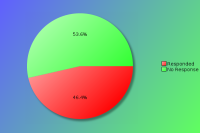
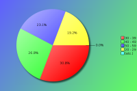
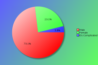
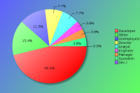
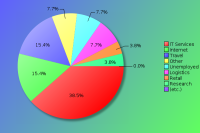
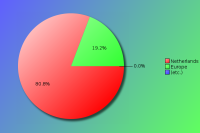

Nederlandse PerlWorkshop 2014 - Survey Results
The following survey results are a simple presentation of the raw data.
No attempt has been made to analyse the data and compare with previous
years. See forthcoming PDFs for more in depth analysis.
Click on pie charts to view larger image version.
Demographics (required)
These questions will help us understand who our attendees are.
Attendees:

| Count | Description |
|---|
| 26 | Responded |
| 30 | No Response |
| 56 | Total |
| 46 | Response Percentage |
Age Band:

| Count | Description |
|---|
| 0 | under 20 |
| 5 | 20 - 29 |
| 8 | 30 - 39 |
| 7 | 40 - 49 |
| 6 | 50 - 59 |
| 0 | 60 and over |
Gender:
Although this question is optional, with your help we would like to monitor changes in attendance over time.

| Count | Description |
|---|
| 19 | Male |
| 6 | Female |
| 1 | It's Complicated |
Job Type:
If your position covers many roles, please base this on your most senior responsibility. Also base this on the role you perform, rather than your job title. For example, a 'QA Developer' would be a 'Developer' role, and 'Information Manager' would a Manager role (Technical or Non-Technical depending upon your responsibilites)

| Count | Description |
|---|
| 2 | CEO/Company Director/Senior Manager |
| 0 | Non-Technical Manager |
| 1 | Technical Manager |
| 2 | Technical Architect/Analyst |
| 12 | Developer |
| 1 | Engineer |
| 1 | SysAdmin |
| 0 | Student |
| 0 | Lecturer/Teacher/Trainer |
| 0 | Human Resources |
| 0 | Researcher |
| 3 | Unemployed |
| 4 | Other |
If 'Other' please enter your professional job role or title:
- Freelancer
- Front end office monkey
- self-employed interpreter
Industry:
If you or your company undertake work within mulitple industry sectors, please select the primary one you are currently working within.

| Count | Description |
|---|
| 0 | Automotive |
| 0 | Education |
| 0 | Engineering |
| 0 | Finance |
| 0 | Government |
| 10 | IT Services |
| 4 | Internet/Web |
| 0 | Legal |
| 2 | Logistics |
| 0 | Media/Entertainment |
| 0 | Medical/Healthcare |
| 0 | Property |
| 1 | Research |
| 1 | Retail |
| 0 | Telecommunications |
| 4 | Travel |
| 2 | Unemployed |
| 2 | Other |
If 'Other' please enter your industry sector:
- E-Commerce
- Professional Services
Region:
Please note this is the region you were a resident in, prior to attending the conference.

| Count | Description |
|---|
| 21 | Netherlands |
| 5 | Europe |
| 0 | North America |
| 0 | South America |
| 0 | Asia |
| 0 | Australaisa |
| 0 | Africa |
The Perl Community, YAPCs & Workshops
These questions are designed to help us understand our attendees level of involvement in the Perl community.
How do you rate your Perl knowledge?
| Count | Description |
|---|
| 4 | Beginner |
| 10 | Intermediate |
| 12 | Advanced |
How long have you been programming in Perl?
| Count | Description |
|---|
| 2 | less than a year |
| 1 | 1-2 years |
| 1 | 3-5 years |
| 7 | 5-10 years |
| 14 | more than 10 years |
How many previous Perl Workshops have you attended?
| Count | Description |
|---|
| 4 | Never attended one |
The following matrix lists, for each workshop, how many times an attendee has attended a particular workshop, with the total number of appearances of each.
| Attended Workshops | 1 | 2 | 3 | 4 | 5 | 6 | 7 | 8 | 9 | 10 | 11 | total |
|---|
| Dutch Perl Workshop | 5 | - | - | - | 2 | - | - | - | - | 5 | 1 | 76 |
| Austrian Perl Workshop | 2 | - | - | - | - | - | - | - | - | - | - | 2 |
| Belgian Perl Workshop | 2 | 1 | - | - | 1 | - | - | - | - | - | - | 9 |
| French Perl Workshop | - | 1 | - | - | - | - | - | - | - | - | - | 2 |
| German Perl Workshop | 3 | 5 | - | - | - | - | - | 1 | - | - | - | 21 |
| Dutch Perl Workshop | 1 | - | - | - | 1 | - | 1 | - | - | 3 | - | 43 |
| Nordic Perl Workshop | 1 | - | 1 | - | - | - | - | - | - | - | - | 4 |
| Portuguese Perl Workshop | 1 | - | - | - | - | - | - | - | - | - | - | 1 |
| Ukrainian Perl Workshop | 1 | 1 | - | - | - | - | - | - | - | - | - | 3 |
| any other European Perl Workshops | 2 | 2 | - | 1 | - | - | - | - | - | - | - | 10 |
| any American Perl Workshop | 2 | - | - | - | - | - | - | - | - | - | - | 2 |
| any Russian Perl Workshops | 1 | - | - | - | - | - | - | - | - | - | - | 1 |
| any other Perl Workshops | 1 | 1 | - | - | - | - | - | - | - | - | - | 3 |
Do you plan to attend a future YAPC/Workshop?
| Count | Description |
|---|
| 23 | Yes |
| 3 | Maybe |
| 0 | Don't Know |
| 0 | No |
Are you a member of a local Perl Mongers user group?
| Count | Description |
|---|
| 19 | Yes |
| 7 | No |
If not, do you plan to find one or start one?
| Count | Description |
|---|
| 0 | Yes |
| 2 | Maybe |
| 1 | Don't Know |
| 4 | No |
What other areas of the Perl Community do you contribute to?
| Count | Description |
|---|
| 12 | I'm a CPAN Author |
| 1 | I'm a CPAN Tester |
| 9 | I'm a Perl event organiser (e.g. YAPC, Perl Workshop, QA Hackathon, local technical meetings, etc.) |
| 1 | I'm a board or committee member of a recognised Perl body (e.g. TPF, EPO, YEF, JPF, etc.) |
| 5 | I'm a Perl project developer (e.g. Rakudo, Catalyst, Dancer, Padre, etc.) |
| 5 | I have a technical blog (e.g. on blogs.perl.org or a personal blog) |
| 9 | I use or contribute to PerlMonks, Stackoverflow or other discussion forums |
| 11 | I use IRC (e.g. #perl, #yapc, #london.pm, etc.) |
| 5 | I contribute to Perl mailing lists (e.g. P5P, Perl QA, etc) |
| 3 | other ... |
- CORE contributor and committer
- tech journalist
- www.activecmdb.org
Dutch Perl Workshop 2014
Regarding Dutch Perl Workshop 2014 specifically, please answer the following as best you can.
When did you decide to come to this conference?
| Count | Description |
|---|
| 10 | I'm now a regular Dutch Perl Workshop attendee |
| 1 | After Dutch Perl Workshop 2013 |
| 0 | After reading a blog post about the Dutch Perl Workshop |
| 0 | I was nominated to attend by manager/colleague |
| 4 | I was recommended to attend by friend/colleague |
| 1 | After reading the Perl Weekly |
| 0 | After seeing a link or advert on a Perl specific website |
| 0 | After seeing a link or advert on a non-Perl website |
| 0 | After seeing a link on Twitter, Facebook or other social media website. |
| 0 | After reading an email sent to a mailing list I was on |
| 0 | After seeing other promotions online/in the press |
| 10 | other ... |
If 'Other', when did you decide?
- after a mention @PM group
- After talking to previous organisers
- after Theo's announcement at AmsterdamX.pm
- after Theo's announcement on an AmsterdamX.pm meeting
- at the London Perl Workshop 2013
- heard about it at FOSDEM
- lightning talk at fosdem
- Sawyer dropped it onto me ;)
- while talking about giving a talk about something used in production
Were you a speaker?
| Count | Description |
|---|
| 10 | No |
| 5 | No, but I have spoken before at similar conferences |
| 9 | Yes, and I have spoken before at similar conferences |
| 2 | Yes, and it was my first time as a speaker |
Note that "similar conferences" includes other Workshops and/or YAPCs, as well as Linux, Open Source or large technical events.
If you were a speaker, would you have been able to attend if you hadn't been speaking?
| Count | Description |
|---|
| 13 | Yes |
| 2 | No |
If you weren't a speaker, would you consider speaking at a future conference?
| Count | Description |
|---|
| 16 | Yes |
| 2 | No |
| 3 | Ask me later |
What was your motivation for coming?
| Count | Description |
|---|
| 9 | the list of speakers |
| 8 | the quality of the talks scheduled |
| 7 | to be a speaker |
| 17 | to meet with Perl/project co-contributors |
| 24 | to socialise with Perl geeks |
| 6 | to visit Utrecht |
| 3 | other ... |
If 'Other' please let us know your motivation for coming
- inspiration
- routine, helping the organizers
What aspects of the conference do you feel gave value for money?
| Count | Description |
|---|
| 23 | the talks / speakers |
| 15 | the conference venue |
| 11 | Utrecht |
| 9 | the hallway track |
| 21 | the attendees |
| 3 | other ... |
If 'Other' what else do feel gave value for money?
- organisation
- Overall spirit and culture
- social events
Were there any speakers not present, who you would like to have seen at the conference?
| Count | Description |
|---|
| 7 | Yes |
| 13 | No |
If 'Yes', which speakers?
- Abigail was there... but didn't give a talk :(
- Johan Vromans
- leon timmerman
- LEON, was looking forward to protocols
- Ovid,
brian d foy
and more
- Stevan Little
What kinds of talks would you prefer at future Dutch Perl Workshops?
| Count | Description |
|---|
| 0 | More beginner level talks |
| 3 | More intermediate level talks |
| 4 | More advanced level talks |
| 17 | It's about right |
| 2 | No preference |
Are there any topics you would specifically like to see featured?
- Data, GUI, clean Perl (style), shiny cool Perl features...
- New perl features to be discussed.
- No
- XS programming
How do you rate the workshop?
How would you rate your overall satisfaction of the following areas of the workshop?
| Choices | 1 | 2 | 3 | 4 | 5 |
|---|
| Newsletters/Updates | 11 | 9 | 1 | 1 | - |
|---|
| Web site | 10 | 11 | 2 | 1 | - |
|---|
| Registration process | 13 | 7 | 3 | 1 | - |
|---|
| Directions/Maps | 12 | 9 | 1 | 1 | - |
|---|
| Content of the talks | 12 | 9 | 2 | 1 | - |
|---|
| Schedule efficiency | 16 | 5 | 2 | 1 | - |
|---|
| Social events | 19 | 4 | - | 1 | - |
|---|
| Facilities | 14 | 8 | 1 | 1 | - |
|---|
| Staff | 20 | 3 | - | 1 | - |
|---|
| Overall experience | 20 | 3 | - | 1 | - |
|---|
| Value for money | 20 | 3 | - | 1 | - |
|---|
Key:
1 = Very Satisfied
2 = Somewhat satisfied
3 = Somewhat un-satisfied
4 = Very un-satisfied
5 = N/A

{kind=link}
{kind=link}
{kind=link}
{kind=link}
{kind=link}
{kind=link}